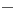

|
|
|


被夹紧零件的几何（连接实体）
被夹紧零件（连接实体）有几种基本类型：
- 平板
- 圆柱体
- 棱柱体
- 环形段

图 42.11：被夹紧零件（连接实体）
如果选择平板，则假定夹紧变形锥能够向侧面自由扩张。对于所有其他选择选项，请单击 按钮以输入要在计算中使用的被夹紧零件的相关尺寸。
单击 按钮以定义被夹紧零件中的通孔。您还可以在此处定义头部或螺母下方的倒角。然后在计算承载面积时将这些倒角纳入考虑。倒角减小了承载面积的外半径，因此增大了表面压力。
您只需在列表中输入不同的材料情况。许用压力、杨氏模量和热膨胀的上半部分的值是适用于室温的材料值，除非是您输入的值，否则始终以灰色背景显示。如果 在 中被选中，则工作温度的值将通过经验计算得出，并显示在相应材料的下半部分。您无法编辑这些值。如果未选择此选项，则必须在此处输入自己的值。单击尺寸计算按钮以调用不同的经验公式，以便将其应用于计算。单击加号按钮以添加材料，单击

按钮以删除所选元素，单击 按钮以删除所有项。计算得出的夹紧长度显示在 lk 字段中。
按钮以删除所有项。计算得出的夹紧长度显示在 lk 字段中。
Geometry of clamped parts (connecting solids)
There are several basic types of clamped parts (connecting solids):
- Plates
- Cylinder
- Prismatic body
- Annulus segment
Figure 42.11: Clamped parts (connecting solids)
If you select Plates, it is assumed that the clamping deformation cone will be able to expand freely sideways. For all the other selection options, click the button to enter the relevant dimensions of the clamped parts you want to use in the calculation.
Click the button to define the through-bore in the clamped component. You can also define chamfers under the head or nut here. These chamfers are then included when the bearing areas are calculated. The chamfer reduces the external radius of the bearing area, therefore increasing the surface pressure.
You simply enter the different material situations in the list. The upper values for the permissible pressure, Young's modulus and thermal expansion are material values that apply at room temperature and, unless they are values you have entered, are always shown with a gray background. If is selected in, the values for the operating temperature are calculated empirically and displayed in the lower half of the particular material. You cannot edit these values. If this option is not selected, you must enter your own values here. Click the Sizing buttons to call the different empirical formulae so they can be applied in the calculation. Click the Plus button to add a material, click the button to delete the selected element and click the button to delete all the positions. The calculated clamp length is displayed in the lk field.